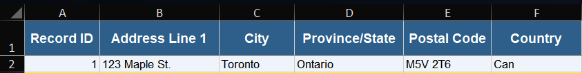
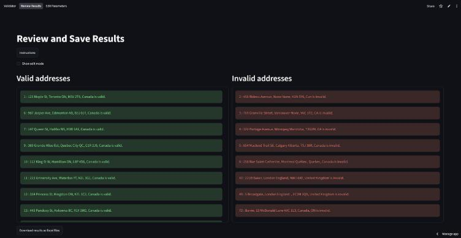
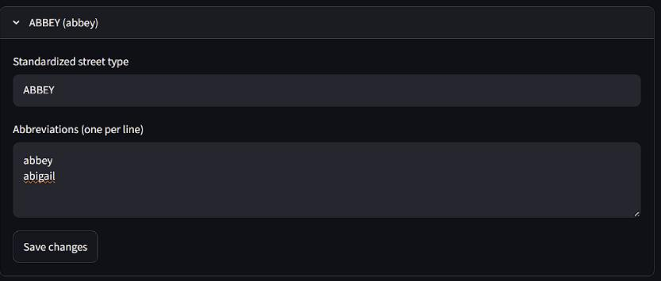
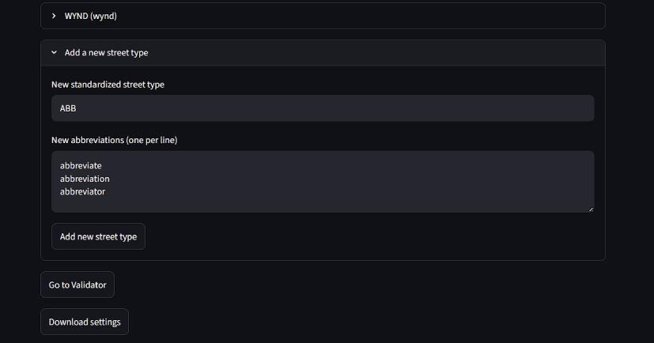

Validation Instructions
Step 1: Click upload to open your file browser.
Step 2: Select the Excel file you want to validate and click "Open".
Note: The file must be in .xlsx format.

Note: Ensure that your Excel file contains the correct columns for address validation.

Required Columns: ID, Address, City, State, Postal Code, and Country
Step 3: After selecting the file, click the "Validate" button to start the validation process.
Once the page refreshes, you will have the option to view or export the results.
Review and Save Results Instructions
Step 1: To navigate to the review page, click the "Display Results" button after the validation process is complete or the "Review Results" link in the navigation menu.
Step 2: In default mode, you will see two tables: valid addresses on the left in green and invalid addresses on the right in red. You can scroll through the tables to review the results.

Step 3: To enter editing mode, check the "Show edit mode" checkbox above the results. In edit mode you can edit the address fields directly in the table.
Note:
- Testing an invalid address will automatically move it to the valid addresses table if edits are valid.
- Testing an already valid address will not move it or even save results automatically.
- Marking an address as valid will save it as-is, it will not automatically fill blanks or be converted to a standardized format.
- Saving edits to an address only stores the changes to the exported Excel file, it does not change the original data.
- Although it is possible to edit the ID, it is not recommended as it may cause issues with the database. It is best to keep the record ID as-is.
- When entering data, using the full form of the address fields is recommended. (e.g., "Ontario" instead of "On", "Street" instead of "St.").
Step 4: Once you have reviewed and edited the addresses, click the "Download Results" button to export the results to zipped Excel files.
Street Type Parameters
This page provides information about the street type parameters used in the address validation process.
Street types are standardized abbreviations for common street suffixes, such as "St" for "Street" or "Ave" for "Avenue".
Uploading a file from previous edits
If you have previously exported the results and want to re-upload the file for further validation, you can do so by clicking the "Upload" button and selecting the exported Excel file.
Ensure that the file is in .json format and was previously exported from the address validation tool.
For visual reference on uploading a previously exported file, refer to the "Validation Instructions" section above.
Making Edits
Step 1: Find the standardized street type you want to edit (e.g., "St" for "Street"). If you want to add one, find the section for adding new street types below.
Step 2: Click the table cell containing the street type you want to edit. The cell will open for editing.
Step 3: There will be two fields: one for the abbreviation and one for the full street type name. To add another form, be sure to separate it by only a new line.
Note: Make sure to download the updated settings after making edits so they can be used in future validations.

Adding New Street Types
Step 1: Scroll to the bottom of the street type table to find the "Add New Street Type" section.
Step 2: Enter the abbreviation and full street type name in the respective fields. If you want to add another form, be sure to separate it by only a new line.
Note: Make sure to copy the standardized form into the abbreviation field and download the updated settings for next use.
